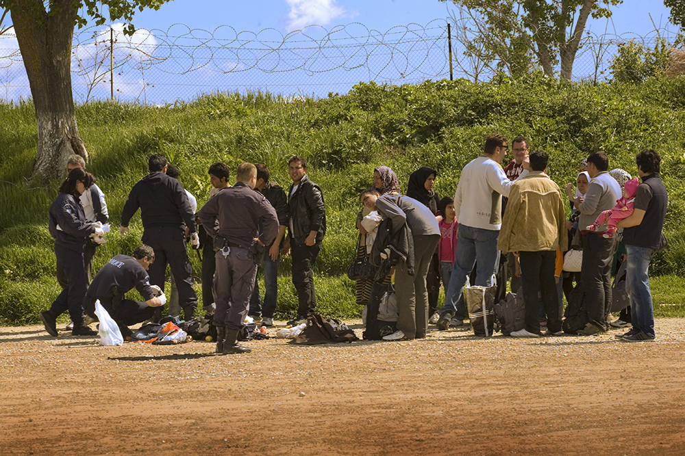
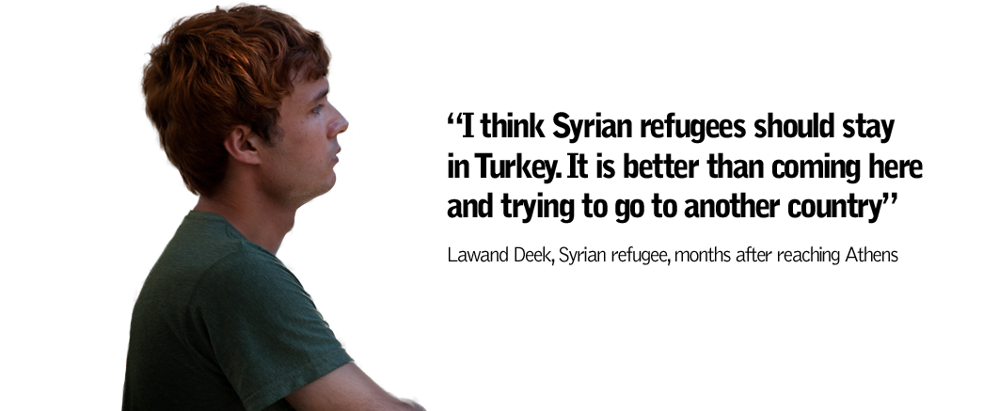
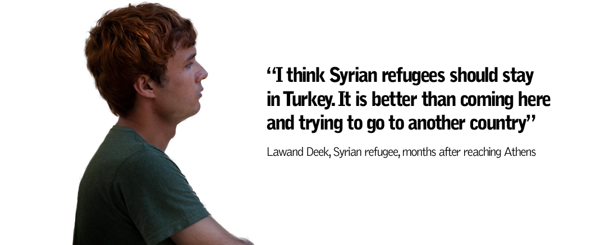

The square was watched over by rooftop snipers. Salwah Mekrsh knew that, but she decided to cross it anyway. With the sun already setting on the old city of Aleppo, soon it would be too dark for the snipers to see. It was autumn 2012, and Aleppo – at that time the most strategic city in northern Syria – was one of the main battlegrounds between Syrian forces and armed opposition groups. Salwah was shot by a sniper in the back.
Salwah was taken from one hospital to another in Aleppo, but her wounds were so severe that to get the treatment she needed, her family had to take her across the border to Kilis, in Turkey, where she was operated on. Kilis is a first stop for most Syrians fleeing the fighting in Aleppo and surrounding areas. For 18-year-old Salwah and her family, these were difficult times. As well as adjusting to a new life as a refugee, Salwah’s injuries left her confined to a wheelchair.
The victims of Syria’s war are too numerous to count. Since it broke out in spring 2011, the war has devastated this country of more than 22 million people, located at the gates of Europe and surrounded by conflicts, with Iraq to the east and Israel and the Occupied Palestinian Territories to the south. According to recent UN figures, by April 2014, the war had killed 191,369 people, although the real figure could be much higher.
At the same time, more than three million people have been made refugees. This exodus of people happening in the heart of the Middle East has been a challenge for Syria’s neighbours. Lebanon, Jordan, Turkey, Iraq and to a lesser extent Egypt are the main countries hosting refugees from Syria. Meanwhile, Europe has done nothing to open its doors to those fleeing the war.
Source: UNHCR
In terms of aid, most of the focus has been on Syria’s refugees, but those people who have stayed in Syria are living with the effects of war and receiving much less assistance. According to the UN, some 6.45 million people are internally displaced within Syria, but these estimates are likely to be inaccurate due to the difficulty for aid organisations of crossing frontlines. The Syrian government has kept a tight grip on the deployment of aid, while insecurity and restrictions rule in opposition-held areas, where MSF is running three hospitals.
In Syria, the areas where most people have been forced from homes are those worst hit by the clashes between government and opposition forces: Damascus and its surroundings, and the provinces of Homs, Deir ez Zor, Idlib and Aleppo. Most people in these areas have suffered indiscriminate bombings, rocket attacks and the destruction of infrastructure, especially schools and hospitals, often used by communities as improvised shelters from the fighting. The conflict has seen hundreds of thousands of homes damaged or destroyed. Collective displacement – the sign of a strategy of war targeting a specific ethnicity or community – is one more of the dramas of this conflict.
The city of Aleppo tells the tragic story of the Syrian war. Aleppo was once an economic powerhouse and the industrial capital of Syria. But relentless attacks and airstrikes, like those that have been smashing apart the city’s eastern neighbourhoods since December 2013, have unleashed wave upon wave of wounded, overwhelming hospitals with casualties. The Syrian Army’s weapon of choice has been barrel bombs dropped on the city from helicopters. People have been leaving the city in droves, heading for the strip of countryside that runs between Aleppo and the Turkish border.
While an estimated 85 percent of people displaced from their homes had sought refuge with relatives by 2013. There are also camps for displaced people within Syria. In the north of Aleppo province, on the border with Turkey, a transit camp is housed in the grounds of the former customs building. The growing population of the camp is a measure of the level of violence in the country: in autumn 2012, the camp housed 4,000 people; today there are more than 15,000. “We were living in Aleppo city and a jet launched big missiles at us. Lots of houses were destroyed, including mine,” says Hussein Alwawi, a Syrian who is sheltering in the camp’s mosque with his five children. He has requested a place in one of the refugee camps across the border in Turkey, but this process can take some time. Some people, especially those with no passport, bypass the official border post and try to find a way across through the olive trees.
Ahmed Beidun is another victim of the war. In 2013, he fled Aleppo with his family. They found shelter in a gloomy garage in the Turkish city of Kilis. Sixteen people are packed into the room in the sticky heat, where dishes, mats and tea sets lie piled on the floor. Pointing to his crutches, he says, “I want a new foot”. Ahmed’s left foot had to be amputated after he was injured in an airstrike on Aleppo. “I was wounded and couldn’t see anything. There was no light. I looked around me but I couldn’t see anyone,” he says. Ahmed was transferred to a hospital in Turkey. While his stump has healed, his psychological wounds are still raw.
For most refugees, their first weeks after escaping the war are a time of extreme anxiety and emotional upheaval. For those with war wounds or medical conditions, it can be even harder. But as the months go by, it does not necessarily get any easier. In 2012, you could still find Syrian refugees convinced that it would not be long before they returned home. But in 2013, which has been marked by an upsurge in violence, a sense of uncertainty has invaded the camps and the temporary homes of the refugees. The relentless airstrikes on Aleppo of the past few months, which have taken a heavy toll on civilians, are a reminder that the war continues – and is even shifting up a gear – even though the media focus may have shifted elsewhere in the world.
At the beginning, most refugees were able to manage. Syria had decent socioeconomic indicators before the war, so many families had reserves of strength and savings to call on. But after long months of exile, the resilience and the family finances have dried up, and nostalgia, hardship and confusion have taken their place. This is all too common among the Syrian refugees living in Istanbul. They made it to the Turkish megalopolis because they had the financial resources to do so, but their savings have dwindled in a city where daily life is much more expensive than in the refugee camps along the Turkish-Syrian border.
42-year-old Hassan Nasser was the manager of a clothes shop on the outskirt of Damascus. Hassan took part in the first protests against the government in March 2011, and soon he suffered the consequences. “We were middle class, but we lost everything,” he says.

Hassan and his family took refuge in Turkey. Now they live in a basement in Istanbul, where the incessant babbling of the TV news is the backdrop to their lives. “Every day I watch TV to get to find out what is happening in Syria. I don’t want to forget my country,” he says.

After he took part in the demonstrations, security forces came to Hassan’s home to arrest him. Hassan jumped from a third-floor window to escape them and injured his back. He has difficulties walking and is unable to work. His medical condition has not improved since he arrived in Turkey, and he may need surgery.

Hassan y su familia tenían ahorros y pudieron permitirse vivir en Estambul. Pero no hay nuevas fuentes de ingresos y poco a poco la economía familiar se está desmoronando.Hassan and his family had some savings and could afford to live in Istanbul, but they no longer have a source of income and, little by little, the family finances are falling apart.


The family is growing in size: 25 June 2013 saw the birth of Zein al Sham, Hassan’s first child to be born in exile. Then a cousin of Hassan’s moved into the basement, along with his wife and children. The household is stretched to its limits.
Most days, the family uses technology to talk to their loved ones still living in Syria. It is the cord connecting them to their country – and it is likely to be for some time, because they won’t go back home until the war is over.
“My mother is still in Syria and hasn’t met her granddaughter. She’s only seen her through Skype,” says Hassan.
Hassan, like many Syrian refugees, would like to live in one of the countries in the European Union. “Lots of Syrians get into Europe through smugglers, but it is very dangerous. And my family can’t afford it. If I had the chance, I would go to Europe, but only by legal means,” he says, in his rented basement in Istanbul. He is unlikely to make it.
As Amnesty International has warned, the humanitarian catastrophe in Syria has not aroused feelings of solidarity in Europe. . Ninety-four per cent of the three million Syrians who have fled the war are staying in Lebanon, Jordan, Turkey and Iraq. The UN Refugee Agency (UNHCR) has called on Western countries to resettle the Syrians affected by the conflict, but so far governments have offered only 42,058 places, 28,500 of them in Germany. These resettlement places mean that the refugees are given resident permits in the host country and are aimed at the most vulnerable refugees already registered in Syria’s neighbouring countries. It is very sad to learn that all the EU countries together are only ready to host roughly one per cent of the Syrian refugees. Healthcare systems are becoming more overcrowded and public financial resources are drying up in the countries surrounding Syria, while Europe turns a blind eye to the crisis even though it is taking place on its doorstep.
Over 50,000 Syrians applied for asylum in EU countries in 2013. They are the biggest national group to do so, ahead of Russia and Afghanistan, but it is a tiny number in light of the magnitude of the refugee crisis. This is partly due to the tedious bureaucratic process and most refugees’ desire to maintain their freedom of movement. Desperate, many of them try to be smuggled into Europe. One of the most dangerous sea routes is the one from the Libyan coasts to southern Italy – the death of hundreds of people off Lampedusa is a grim reminder of this.
The Greek Evros region, bordering Turkey, was another important route, but in summer 2012 the authorities deployed 2,000 security forces and built a 10-kilometre wall to seal the border.

Migrants in Evros, a Greek area bordering Turkey, in April 2012.
Juan Carlos Tomasi / MSF
In several reports, the European Union’s external border agency (Frontex) congratulates itself on how these measures contributed to diminishing the number of migrants entering through this route. But what happened was that the influx moved to the south: the Aegean Islands. In other words, the authorities have pushed thousands of migrants and refugees fleeing wars that are shaping the 21st century, like Afghanistan and Syria, to risk their lives again, this time on boats.
There is no official data about the number of arrivals, so these figures are the best proxy for new arrivals
Arrests of Afghans and Syrians refer to arrests at entry, exit or during police operations in Athens.
The total figures refer only to arrests of new arrivals at Greek-Turkish borders.
Source: Greek Police.
They are knocking on the doors of Europe. In the first seven months of 2013, almost 12,000 Syrians were arrested for irregular entry or stay in Greece. “Since 2004, most of the migrants arriving here were Afghans, but now Syrians make up the largest group,” says Ioanna Kotsioni, MSF migration expert. The humanitarian organisation launched interventions both in Lesvos and Evros in the past.Lawand Deek is one of these Syrians. Last year, he left his family behind and crossed the Turkish border with the idea of going to Greece and ending up studying in the United Kingdom or Canada. Day after day, the 21-year-old Lawand jotted down in his personal diary all the details of his dangerous journey.
These images go back to the spring of 2013. Half a year later, Lawand’s happiness seemed to evaporate in Athens. After months of boredom and desperation in the Greek capital, Lawand lost a lot of money and the idea of exiting the country became more and more remote. “I don’t know where I’ll be going,” he said. At that moment, Lawand was clear that he wouldn’t try the sea route and described the death of hundreds of people off Lampedusa as “tragic”.
 

But soon Lawand’s situation had changed, according to his Facebook status. He made it to the United Kingdom and settled down in Cardiff, where he is sharing a flat and studying English. “I applied to the University of Alberta, in Canada. I want to study Commerce,” he says on the phone from Cardiff, while refusing to explain how he got there.
Thousands of migrants and refugees like Lawand wander in exile, hoping to see a light at the end of the tunnel, trying to move in difficult terrain between bureaucracy, migration policies and the cruelty of the human trafficking networks. Many of them come from conflict-ridden countries. In the last decade, the influx of Afghans was –and still is– a grim reminder of the dramatic consequences of war in the Central Asian nation. The past years marked the beginning of an exodus that Europe is ignoring. It will take time for this humanitarian crisis to start settling down. Syrian hospitals will still continue to be overwhelmed with wounded people, as has repeatedly happened in Aleppo city. Running away will be the only hope for hundreds of thousands of people and the obstacles to providing humanitarian assistance to the refugees in the neighbouring countries will remain. While bombs keep falling on Syrian soil, women like Salwah will get injured, men like Ahmed will escape to Turkey and students like Lawand will look for a better future in the West.